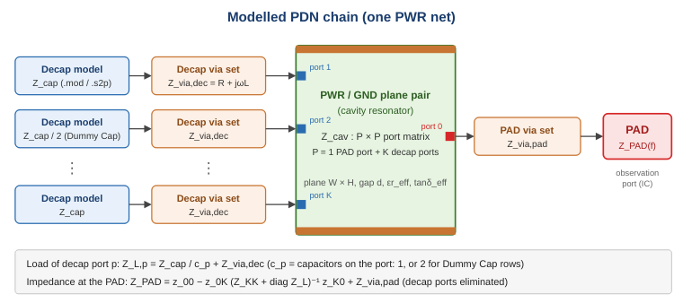
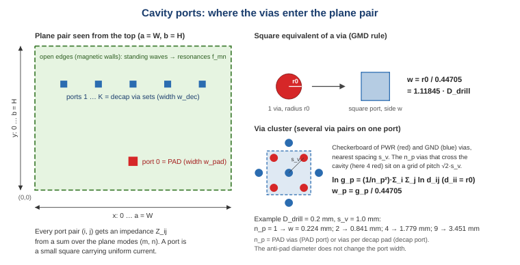
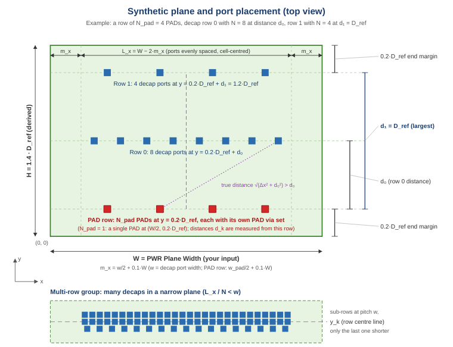
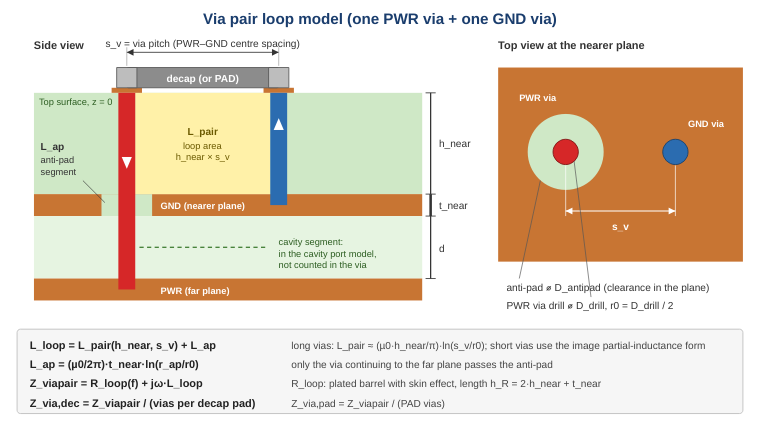
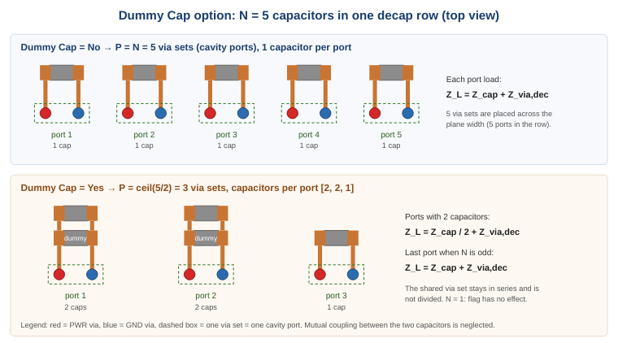

This page explains, with as little mathematics as possible, how the tool turns your inputs into |Z(f)| at the PAD. The equations are given in plain text for reference; the literature is listed on the References page.
Sections: PDN chain · Plane pair · Cavity resonator · Ports · Synthetic geometry · Via loop · Decap loads and Dummy Cap · Z at the PAD · Curve shape · Numerics

Figure 1 – Decap – via – plane cavity – via – PAD.
When the IC draws a fast current step, the charge comes from the nearest capacitors. The path is: capacitor (its own ESR and ESL) → its vias down to the planes → sideways through the PWR/GND plane pair → up the IC's vias → PAD. Every part of that path adds impedance. The tool models each part separately and then connects them like a circuit:
| Part | Model | Inputs used |
|---|---|---|
| Decap | Impedance from a SPICE subcircuit or S-parameter file, plus optional mounting inductance | Decap list, model files |
| Decap via set | Series R + jωL of the via pairs above the planes | Via settings, stack-up depth |
| Plane pair | Rectangular cavity resonator with one port per via set | Stack-up, PWR list, distances |
| PAD via set | Same via model with the PAD via count, one via set per PAD | Via settings |
| PAD(s) | N_pad ideal observation ports of one net, joined at an ideal common node (no die or package model) | PWR list (Number of PADs) |
The PWR layer and its GND layer form a parallel-plate structure. The layers between them give the gap d and an effective dielectric (the layers are in series in the field direction, like capacitors in series):
d = Σ t_i (all layers between PWR and GND) d / εc_eff = Σ t_i / εc_i, εc = εr·(1 − j·tanδ) (dielectric layers, complex permittivity εc) C_plane = ε0 · εr_eff · W · H / d (εr_eff = real part of εc_eff)
Example: W = 60 mm, H = 21 mm, d = 0.1 mm, εr = 4.3 → C_plane = 480 pF. The plane capacitance is small compared with the decaps (41 µF in the same example), but the plane pair is essential as the low-inductance connection between PAD and decaps.
Because the gap d is tiny compared with the plane size and the wavelength, the voltage between the planes depends only on the position (x, y) on the plane. The plane pair behaves like a thin two-dimensional resonator with open (magnetic-wall) edges, similar to a drum skin: it has natural standing-wave patterns (modes) with resonance frequencies
f_mn = c0 / (2·√εr_eff) · √( (m/W)² + (n/H)² ) m, n = 0, 1, 2, …
Examples: 60 × 21 mm, εr = 4.3 → f_10 = 1.20 GHz, f_01 = 3.44 GHz. 100 × 80 mm, εr = 4 → f_10 = 749 MHz.
The impedance between any two points (ports) i and j on the plane is a sum over all modes [Okoshi85], [Lei99]:
Z_ij(f) = Z_p/(W·H) · Σ_m Σ_n (mode shape at port i) · (mode shape at port j) / (k_mn² − k²(f))

Figure 2 – Each via set is a small square port. Its width is chosen so that it has the same geometric mean distance as the round via barrel (or the via cluster).
A via is a small round tube. In the cavity model it is replaced by a small square carrying uniform current, with side w = r0 / 0.44705 = 1.118 × D_drill, which reproduces the inductance of the via correctly (verified to about 0.4 % against image theory). Several via pairs of one set form a cluster, represented by a wider square (GMD rule [Grover46], [Paul10]). Ports 0…N_pad−1 are the PADs; the following K ports are the decap via sets.

Figure 3 – Plane W × 1.4·D_ref: PAD row at 0.2·D_ref from one edge, farthest row at 1.2·D_ref, 20 % margins.
You enter only the plane width W and a distance per decap row. The tool builds the plane so that the PAD and all decap rows fit with equal margins:
D_ref = largest Distance to PAD of the PWR net
H = 1.4 · D_ref
PADs : 1 PAD at (W/2, 0.2·D_ref); N_pad PADs evenly spread in x at y = 0.2·D_ref
with margins w_pad/2 + 0.1·W (sub-rows one port apart if crowded)
row k : y_k = 0.2·D_ref + d_k, ports evenly spread in x with margins w/2 + 0.1·W
What this approximation preserves and what it does not:

Figure 4 – Loop between PWR and GND via above the nearer plane, anti-pad segment, cavity segment.
Both decaps and the PAD are on the Top side. Current flows down the PWR via and back up the GND via; the magnetic flux between the two barrels above the nearer plane sets the inductance. The model uses the partial inductances of two parallel barrels of length h_near at pitch s_v with the nearer plane as a mirror [Paul10], [Grover46], plus the short coaxial segment through the anti-pad:
L_loop = L_pair(h_near, s_v) + L_ap L_pair → (µ0·h_near/π)·ln(s_v/r0) for long vias Z_viapair = R_loop(f) + jω·L_loop Z_via,dec = Z_viapair / n_pad Z_via,pad = Z_viapair / (PAD vias)
n_pad is the number of vias on each decap pad: a decap via set has n_pad PWR vias and n_pad GND vias, i.e. n_pad via pairs in parallel. The same parallel-pair rule is used at every observation PAD (each PAD has its own set of PAD vias). In the cavity, the n_p vias of a set that cross the plane gap form one wider square port of equal geometric mean distance (n_p = n_pad for a decap, PAD vias for the PAD).
Rule of thumb: close to 0.9 nH per mm of via length for a 0.2 mm via with 1 mm pitch when the via is much longer than the pitch (0.77 nH for exactly 1 mm, because of end effects). Details and examples: Via settings.
Each decap port is terminated by the impedance of what is connected to it:
Z_cap = Z_decap(f) + jω·L_mount one capacitor with its mounting inductance Z_L = Z_cap / c + Z_via,dec c = number of capacitors on the via set (1 or 2)

Figure 5 – With Dummy Cap, capacitors are paired on one via set: two capacitors in parallel (Z_cap/2) in series with one undivided via set.
The cavity gives a P × P impedance matrix (P = N_pad + K ports). Terminating every decap port with its load and "looking into" the PAD ports is a standard port reduction (Schur complement) [Swaminathan07], [Novak07]:
Z_cav = | Z_PP Z_PK | ports 0…N_pad−1 = PADs, then K decap via sets
| Z_KP Z_KK |
Z_pp,red = Z_PP − Z_PK · (Z_KK + diag(Z_L))⁻¹ · Z_KP N_pad × N_pad
PAD side. With one PAD (N_pad = 1) the reduced matrix is a single number Z_red and
Z_PAD = Z_red + Z_via,pad
Z_plane = z_00 + Z_via,pad ("plane only" curve: no decaps)
With several PADs, every PAD has its own via set Z_via,pad in series, and all PADs are connected together at one ideal common node on the die/probe side (same voltage, no die or package impedance). The PADs are then driven in parallel:
A = Z_pp,red + Z_via,pad · I (via set of each PAD on the diagonal) Z_PAD = 1 / ( 1ᵀ · A⁻¹ · 1 ) (sum of all entries of A⁻¹, inverted) Z_plane = 1 / ( 1ᵀ · (Z_PP + Z_via,pad · I)⁻¹ · 1 )
For one PAD this reduces exactly to Z_red + Z_via,pad. N PADs at the same spot would equal one PAD with N × the PAD vias; PADs spread across the width additionally shorten the spreading path to the decaps. More PADs lower |Z| mainly in the inductive mid-frequency range (example VDD_IO at 100 MHz: 882 mΩ with 1 PAD, 575 mΩ with 2, 426 mΩ with 4).
In words: the decaps, each seen through its vias and through the plane spreading impedance from its own position, all act in parallel at the PADs, including the interaction between decaps that share the plane. The PAD vias are added in series at each PAD, and the PADs are combined in parallel. This is done at every frequency of the sweep.
| Frequency region | Dominated by | Levers |
|---|---|---|
| Low (100 kHz …) | Total capacitance: |Z| ≈ 1/(2πf·C_total), falling at −20 dB/decade. No VRM is modelled. | Bulk/large-value decaps. |
| Decap resonances (dips) | ESR of the capacitors in parallel, at the series resonance of capacitance with the total loop inductance. | Count, ESR, capacitor values. |
| Mid (a few MHz … 100 MHz) | Inductance: capacitor ESL + mounting + via loops + spreading in the plane, divided by the number of parallel paths. Rises at +20 dB/decade. | Via length (plane depth), via pitch, number of vias, distance, count. |
| Anti-resonance peaks | Parallel resonance between the inductance of one capacitor group and the capacitance of another (or of the plane). | Mix of values, damping (ESR). |
| High (hundreds of MHz …) | Plane capacitance and plane resonances; PAD via inductance. | Thin dielectric, PAD via count, number of PADs. |
Sanity check with the example project at 100 kHz: VDD_CORE has 10 × 100 nF + 4 × 10 µF = 41 µF → 1/(2π·100 kHz·41 µF) = 38.8 mΩ; the computed value is 38.7 mΩ.
W_MODES_CAPPED); the status bar shows the mode count.